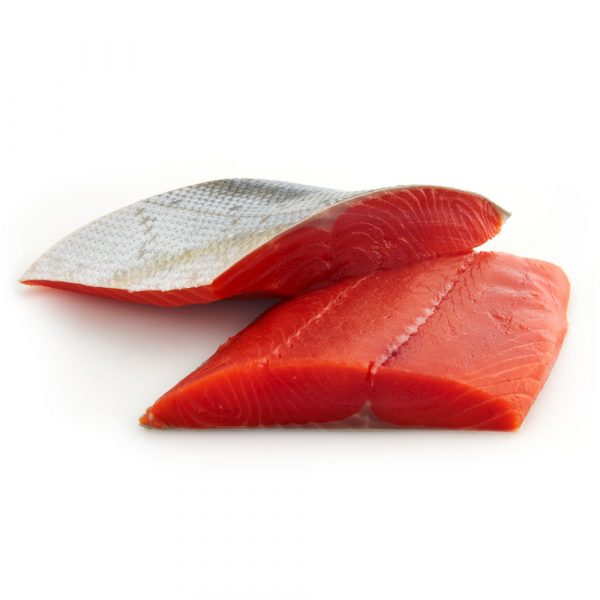
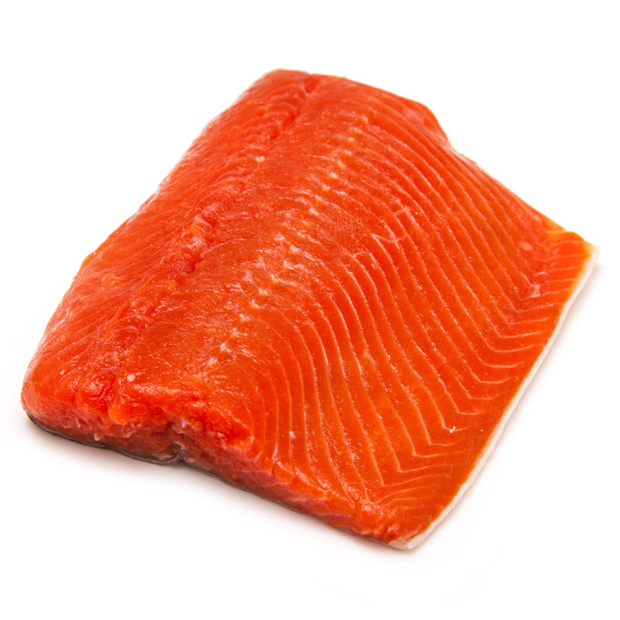
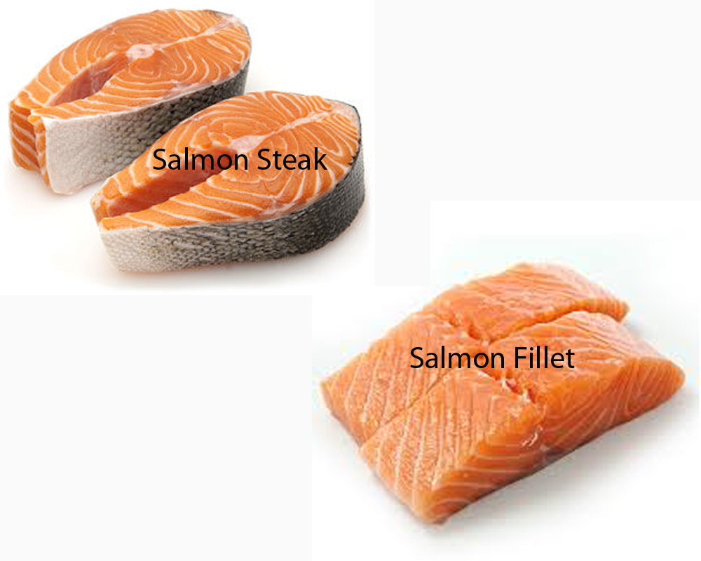

Sockeye (aka Red or Blueback Salmon) is the best. It may also be called "Wild Alaskan
Salmon". It should be a deep red color.

Chinook (aka King Salmon) is second best. It should be a dark orange or red color
.

If neither is available, Coho Salmon is next best, or just get the darkest red/orange color with
the least amount of white you can find.
Prefer "wild" over "farmed", but do what works for your budget.
Prefer "fresh" over "previously frozen" for taste, no effect on health.
Farmed Atlantic Salmon might be artificially colored, try to avoid it unless it is all they
have.
Instructions for the fish guy
No matter what you choose:
Buy FILLETS, not steaks

Buy 1/3 to 1/4 lb per portion you are going to cook, i.e. a little more than 1/2 lb
for two portions, or 1lb for 3 portions, is good
Ask the fish market guy to:
Remove the skin
Remove the bones
Cut into X number of fillets (one fillet per portion)
Storage
COOKED salmon will last ~1 week in the fridge.
FRESH salmon will last about 2 days in the fridge. You can tell if it has gone bad if it is
slimy, and/or it has a much stronger fishy smell.
You can FREEZE any fresh salmon you buy, and it will last ~6 months in the freezer.
NOTE: If you plan to freeze it all anyway, see if you can buy frozen salmon (not
"previously frozen", actual frozen salmon).